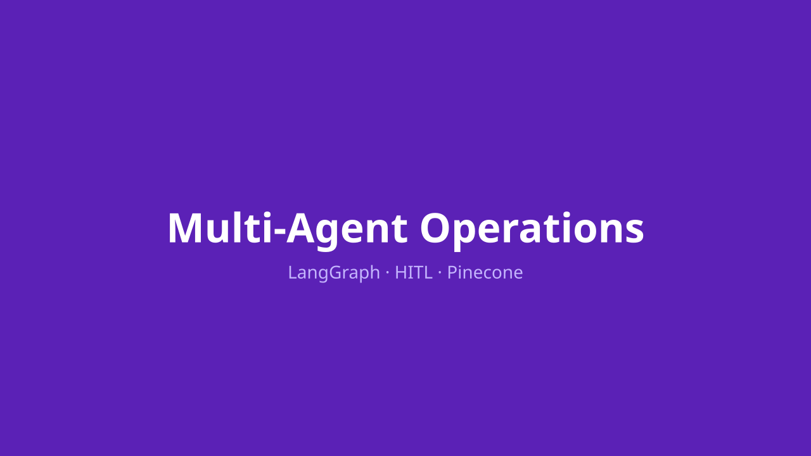
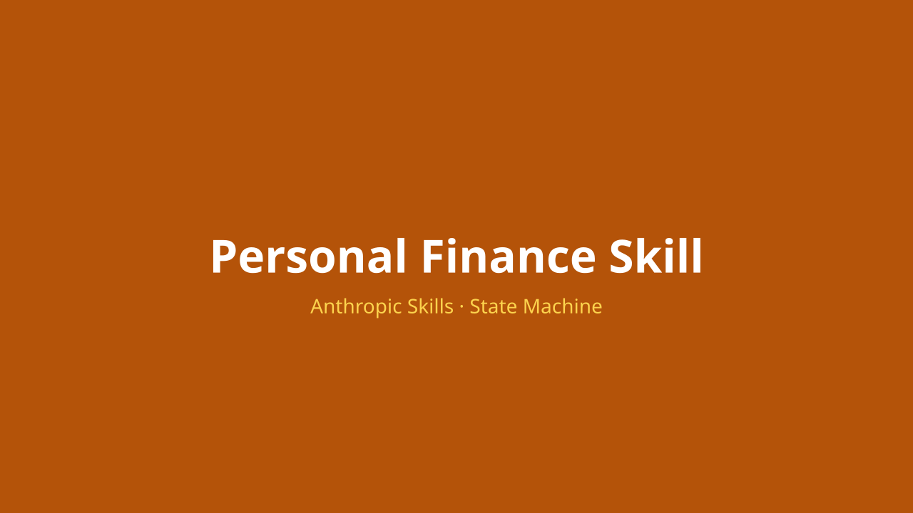
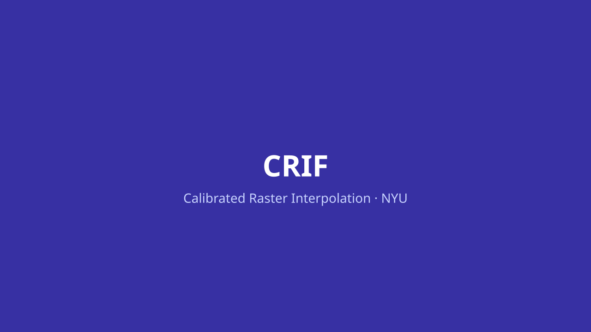
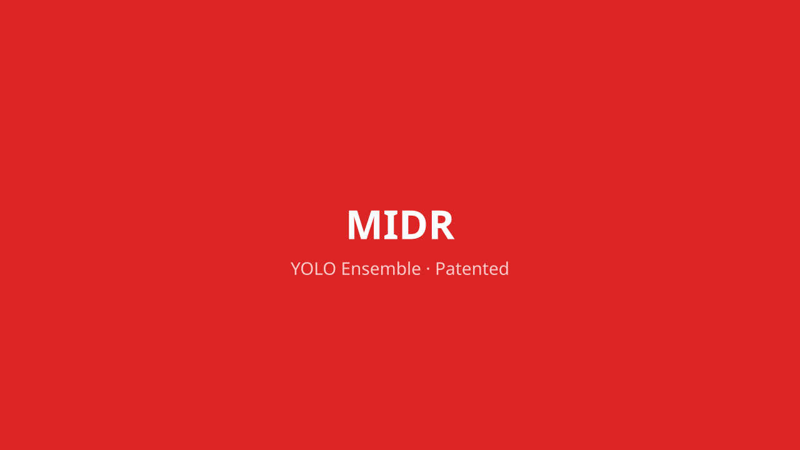

Work Experience
AI Engineer / Agent Engineer · Arke Analytica
January 2026 — PresentBuilding production AI products for B2B platforms. Independent practice.
- LangGraph
- LangSmith
- Pinecone
- Redis
- FastAPI
- React 19
- TypeScript
- Tailwind
- AWS
- PostgreSQL
- Anthropic / OpenAI
- Cycle-time reduction. Reduced a recurring B2B operational workflow from ~1 month to ~40 minutes (~99%) by building a production multi-agent system on LangGraph: intent classification, deterministic workflow subgraphs, human-in-the-loop confirmation gates for state-changing operations.
- Lateral query pattern. Designed an interrupt-and-resume mechanism enabling users to pause in-flight workflows, ask side questions, then resume from the exact same node.
- Session persistence. Implemented Redis checkpoints (TTL-bounded) and bearer-token pass-through auth where the agent never stores credentials. Deployed on AWS (ECS, MemoryDB).
- Full-stack delivery. Shipped FastAPI + async SQLAlchemy + Postgres backend with LangGraph AI module (Anthropic / OpenAI provider abstraction, SSE streaming) + React 19 + TypeScript + Tailwind frontend.
Research Scientist (Data Science) · Vida Center — NYU Tandon School of Engineering
September 2025 — December 2025Contributed to the UrbanMapper project — an analytics framework for large-scale urban Big Data processing and spatial-temporal modeling.
- Python
- GeoPandas
- Rasterio
- PyTorch
- Bayesian modeling
- Jupyter widgets
- Docker
- CRIF library. Built CRIF (Calibrated Raster Interpolation), a Python library for unified geospatial rasterization and dasymetric mapping — formal mathematical derivation, custom Jupyter widgets, Docker packaging.
- Bayesian + geospatial. Applied Bayesian modeling and geospatial methods (GeoPandas, Rasterio) to urban Big Data: point-to-raster aggregation, polygon rasterization with overlap handling, hotspot discovery via raster fusion.
- Cross-discipline work. Worked with urban science, data visualization, and applied math teams to enhance data-driven decision-making in research contexts.
Data Scientist · Atlântico
November 2024 — August 2025Built NLP and anomaly detection systems for industrial datasets.
- Python
- Ollama
- GPT
- RAG
- Azure
- .NET
- NLP pipelines. Shipped sentiment analysis and entity recognition using RAG patterns over Ollama and GPT models — early production work with LLMs before the agent stack matured.
- Anomaly detection. Built defect-forecasting models for industrial time-series data.
- APIs & microservices. Delivered Python + .NET services on Azure.
Data Scientist & Software Developer · Agilean
October 2020 — November 2024Built predictive analytics and data integration systems for the construction and industrial sectors.
- Python
- ML
- Azure
- ETL
- C# / .NET
- Predictive ML. Forecasted construction-site waste and schedule delay using ML and data-mining over operational data.
- ETL pipelines. Designed and deployed integrations on Azure Data Factory.
- APIs & microservices. Built C# ASP.NET MVC and Python services on Azure Cloud.
Researcher · Chief Scientist Program (FUNCAP, Ceará State Government)
January 2020 — September 2025Computer vision research applied to highway infrastructure management.
- PyTorch
- YOLO
- Ultralytics
- OpenCV
- Python
- MIDR ensemble. Built a YOLO-ensemble defect-detection system with custom IOU/NMS fusion logic. Patented and currently the standard inspection system used by the Court of Accounts of the State of Ceará (TCE-CE).
- Data pipelines. Designed scalable storage, preprocessing, and modeling pipelines for highway imagery datasets.
- Iterative refinement. Collaborated with civil engineering and AI experts to refine defect-detection accuracy across model generations.
Featured Projects
-

Multi-Agent Operations Assistant
Production · Confidential
LangGraph multi-agent system that cut a recurring B2B operational workflow from ~1 month to ~40 minutes (~99%) for an enterprise SaaS platform.
- LangGraph
- LangSmith
- Pinecone
- Redis
-
Etherpay — Web SaaS
Pre-launch · Pilot ready
Mobile-first web SaaS for service-business client and billing management — track customers, charges, and payment status, with an embedded AI assistant on a Supabase backend.
- Next.js (App Router)
- TypeScript
- Supabase (Postgres / Auth / Storage)
- Tailwind
-

Personal Finance Skill
In development · Anthropic Skill
Anthropic Skill that processes Brazilian bank statement PDFs through a stage-based state machine — parse, validate, classify merchants, and persist to a personal SQLite ledger.
- Anthropic Skills protocol
- Python
- SQLite
- PDF parsing
-

CRIF — Calibrated Raster Interpolation
Open research
Geospatial Python library for unified grid rasterization, dasymetric mapping, and hotspot discovery. Built at NYU VIDA Center for the UrbanMapper project.
- Python
- GeoPandas
- Rasterio
- NumPy
-

MIDR — Pavement Defect Detection
Production · Adopted
YOLO-ensemble defect detection deployed in highway inspection by the Court of Accounts of Ceará (TCE-CE). Custom IOU + NMS fusion across multiple class-specialized YOLO models.
- Python 3.11
- PyTorch
- Ultralytics YOLO 8.3.x
- OpenCV
-
Nutrir — Meal Verification CV
Production · Adopted
Computer-vision pipeline for meal verification deployed by the Municipality of Fortaleza — classifies meal components from a photo and pairs the percentages with a scale weight to produce per-meal nutritional records.
- Python
- PyTorch
- image segmentation
- OpenCV